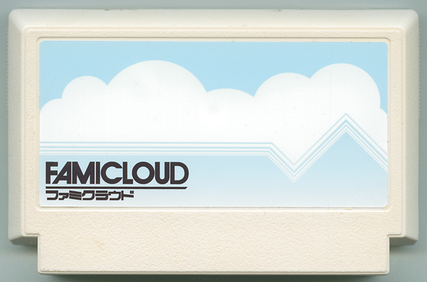

FAMICLOUD
マスカット大統領（PRESIDENTS）／スクラッチ愛好家
クラウドコンピューティングをゲームで勉強しよう！ という試みのもと生まれたソフトだったが、初期段階で計画が頓挫。最終的にはただ雲を操作して眺める、といった予定とは全く違う至って地味なゲームとして世間を騒がした。十字キーやABボタンで雲を動かす基本操作だけでなく、2コンのマイクに息をふきかけると雲に「CLOUD」の文字が浮かび上がるといった裏技があったとか無かったとか。。。